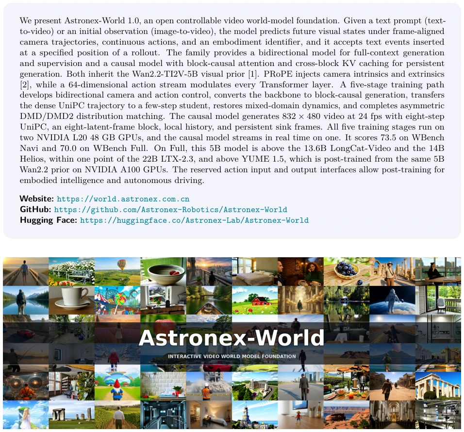
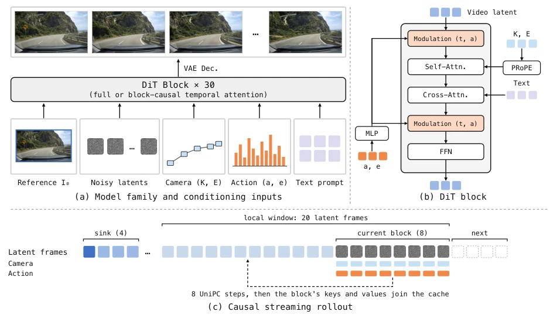
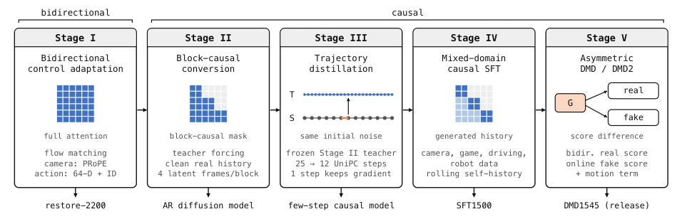
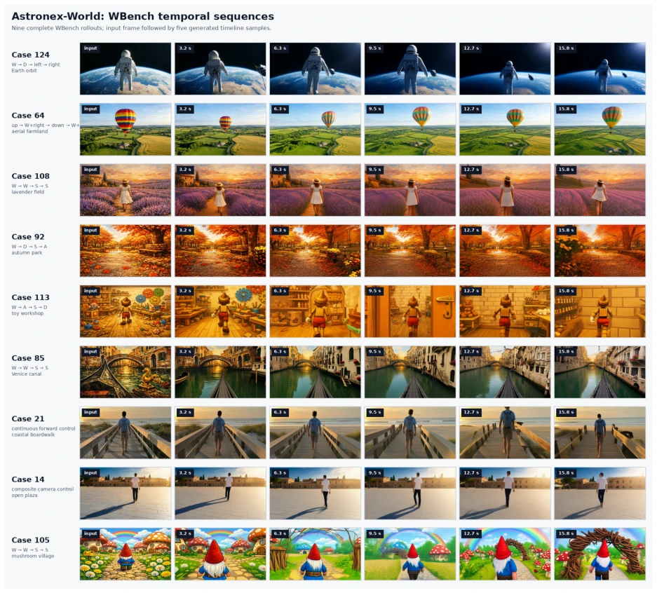
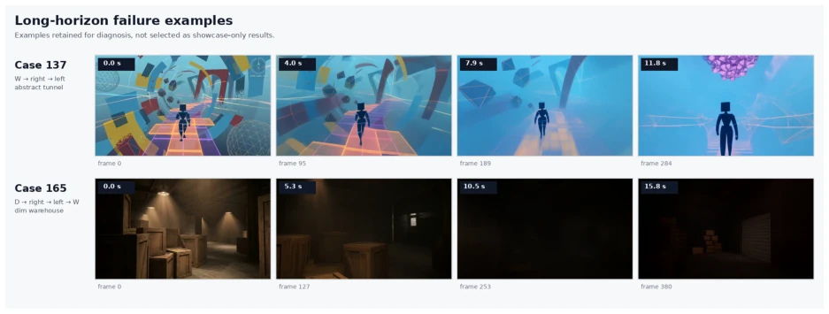
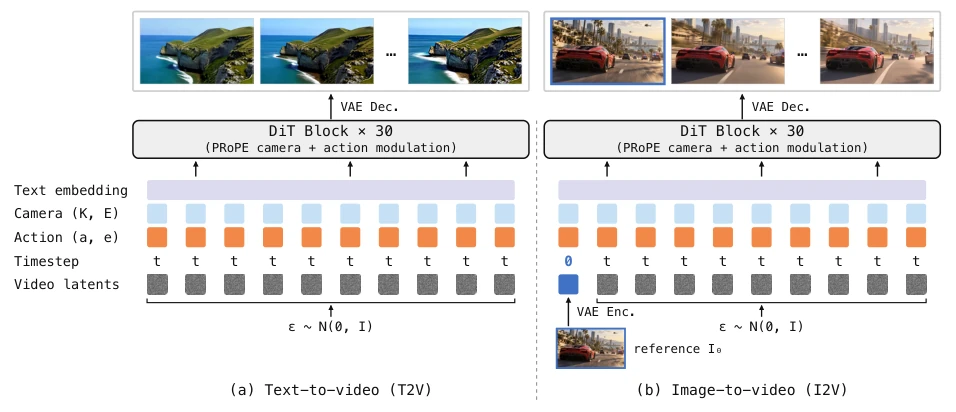
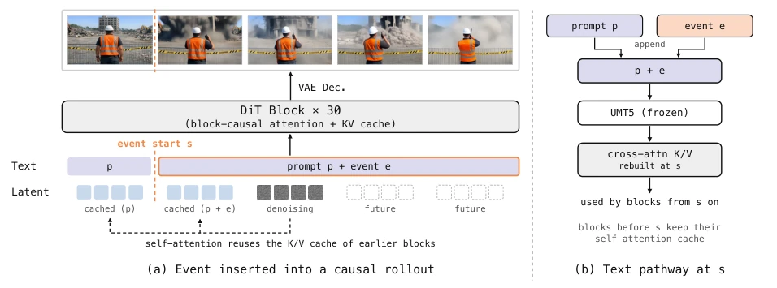
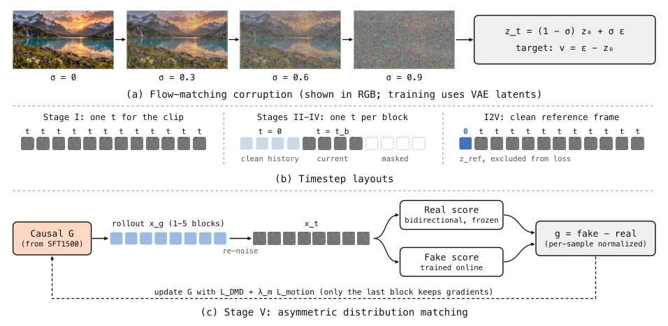
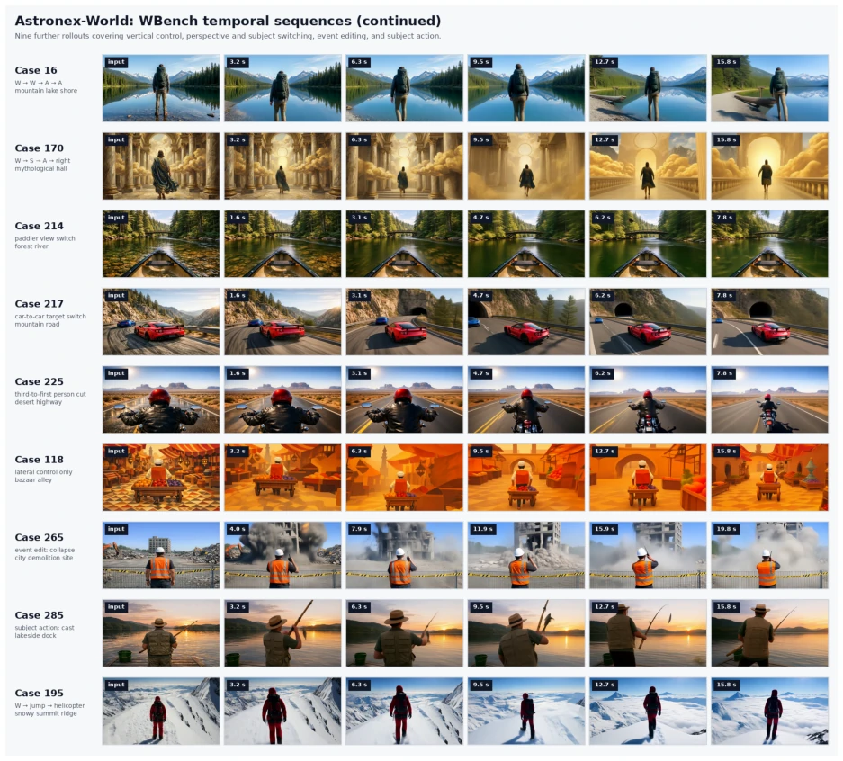
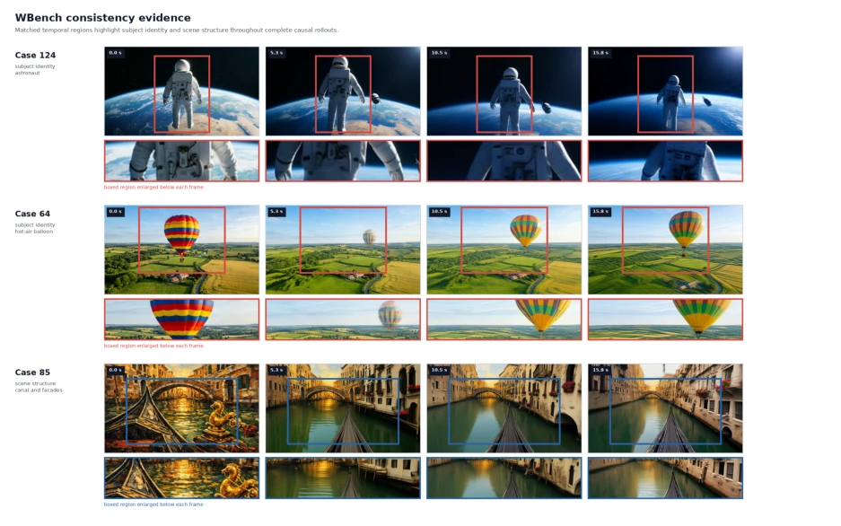

The 5B model dares to go head-to-head with the 22B LTX-2.3; Astronex-World's "small cannon" strategy this time is indeed impressive. It fully leverages Wan2.2's visual priors, integrating both bidirectional and causal modes, seeking both offline generation quality and real-time interaction smoothness. However, do not be dazzled by the "world models" halo; those color drifts and geometry collapses in Figure 10 indicate that long-range consistency is still not fully resolved. Although the WBench scores look impressive, running 24fps real-time performance on a single L20 card saves hardware costs, but who will pay for the cost of model hallucination "drift"? In short, this is an attempt walking a tightrope between efficiency and quality, suitable for developers who do not want to maintain GPU clusters, but do not expect it to perfectly simulate the physical world.
The core of world models lies in learning controllable dynamics between observations, actions, and future observations [3]. However, existing video diffusion Transformers typically rely on bidirectional attention and cannot support causal generation required for real-time interaction [27]. Meanwhile, relying solely on text and the first frame makes it difficult to specify executable control; the model needs to understand temporally aligned camera geometry and continuous actions [2]. Furthermore, autoregressive rollout easily accumulates errors, leading to motion decay and geometry drift [36]. Astronex-World attempts to resolve these tensions: it starts from Wan2.2-TI2V-5B visual priors [1], constructing complementary model forms of bidirectional and causal. The bidirectional model retains full context for high-quality generation, while the causal model achieves persistent generation through block causal attention. Its motivation lies in providing a general foundation architecture, reserving action interfaces for subsequent fine-tuning to embodied intelligence and autonomous driving, rather than repeating training for a single task.

Figure 1. Astronex-World 1.0 is a 5B controllable video world-model foundation with bidirectional and causal releases. Frames are sampled from videos generated by the model in interactive, image-to-video, and text-to-video settings.
方法Method
整体 Pipeline 分为数据、模型、训练和推理四层。模型基于 30 层 DiT，支持双向或块因果注意力。控制接口统一：相机通过 PRoPE 注入内参和外参 [2]，动作通过 64 维向量 + 具身 ID 调制每一层。训练分五阶段：Stage I 在双向模式下适配相机和动作控制；Stage II 将注意力转为块因果掩码，使用 Teacher Forcing；Stage III 通过在线轨迹蒸馏将 25 步 UniPC 压缩至 12 步；Stage IV 在混合域数据（游戏、驾驶、机器人）上进行因果 SFT；Stage V 使用不对称 DMD 匹配分布并保留运动。推理时，因果模型每块生成 8 个潜在帧，使用 8 步 UniPC，配合 20 帧局部窗口和 4 帧 Sink 帧维持长程记忆。动作输出接口保留，支持后训练解码动作序列。
The overall Pipeline is divided into four layers: data, model, training, and inference. The model is based on a 30-layer DiT, supporting bidirectional or block causal attention. Control interface unified: camera injects intrinsics and extrinsics via PRoPE [2], actions modulate every layer via 64-dimensional vector + embodiment ID. Training is divided into five stages: Stage I adapts camera and action control in bidirectional mode; Stage II converts attention to block causal mask, using Teacher Forcing; Stage III compresses 25-step UniPC to 12 steps via online trajectory distillation; Stage IV performs causal SFT on mixed-domain data (games, driving, robotics); Stage V uses asymmetric DMD to match distribution and retain motion. During inference, the causal model generates 8 latent frames per block, using 8-step UniPC, paired with 20-frame local window and 4-frame Sink frames to maintain long-term memory. Action output interface reserved, supporting post-training decoding of action sequences.

Figure 2. Astronex-World model and inference pipeline. (a) One 30-block video DiT, used with full temporal attention (bidirectional checkpoint) or block-causal attention (causal checkpoint), takes a reference frame, noisy latents, per-frame camera and action conditions, and a text prompt, and decodes the result with the VAE. (b) Inside each block, camera matrices enter self-attention through PRoPE, the text enters through cross-attention, and the action vector with its embodiment ID is mapped by an MLP into the scale, shift, and gate modulation that also carries the timestep. (c) The causal model generates eight latent frames per block with eight UniPC steps, attends to four sink frames and a 20-frame local window, and adds each finished block to the KV cache. Frames in (a) are from an act

Figure 5. The five training stages. Stage I adapts the bidirectional model to camera and action control under full attention. Stage II switches to a block-causal mask and trains with teacher forcing on clean history. Stage III distills a frozen 25-step teacher (T) into a 12-step student (S) that starts from the same noise; one student transition receives gradients. Stage IV fine-tunes on mixed-domain data with generated history (light cells). Stage V matches the generator (G) to a frozen bidirectional real score and an online fake score. The checkpoint produced by each stage is listed below it.
On WBench, Astronex-World 1.0 scores 70.0 on Full 289 and 73.5 on Navi 158. Comparisons show the 5B model exceeds 13.6B LongCat-Video and 14B Helios on Full, approaching 22B LTX-2.3. Training requires only 2 L20 GPUs, while Helios requires 64-128 H100s. VBench tests also show good performance in T2V and I2V. However, Figure 10 reveals issues of color drift and detail loss in long-term generation, Sink frames delay but do not eliminate. Additionally, event editing function only supports causal mode, bidirectional mode cannot locally modify. Overall, the model has obvious advantages in efficiency, but there is still room for improvement in long-term consistency for complex physical interaction.

Figure 7. WBench temporal sequences. Each row is one complete causal rollout of a four-round case, 381 frames or 15.875 seconds. The first column is the WBench input; five later frames are sampled in temporal order. Nine cases cover orbital Earth, aerial farmland, a lavender field, an autumn park, a toy workshop interior, Venetian canals, a coastal boardwalk, an open plaza, and a mushroom village under forward, backward, lateral, vertical, and composite camera trajectories. The model preserves identity, structure, and dominant color under substantial viewpoint changes; the 158/289 quantitative results provide the aggregate evaluation.

Figure 10. Representative failures. In Case 137, the abstract tunnel undergoes color and geometric drift under W-right-left. In Case 165, the warehouse gradually darkens and loses local detail. Attention sinks delay but do not eliminate long-term color and structural drift, and a return turn does not guarantee reversible scene evolution.
其他图片Other Figures

Figure 3. T2V and I2V with the same Astronex-World DiT. Each column is one latent frame. The prompt is a global condition read through cross-attention; camera (K, E) and action (a, e) are aligned to latent frames and enter every block through PRoPE and action modulation. (a) T2V: every latent frame starts from Gaussian noise and shares the time t. (b) I2V: the reference frame I0 is VAE-encoded into the first latent frame, which stays clean at time 0 and is excluded from the loss; only the remaining frames are denoised. The DiT is called at every UniPC step, and the VAE decoder maps the final latent to RGB. Frames in (a) come from a VBench T2V video and frames in (b) from an I2V clip on the project website.

Figure 4. Event prompts in the causal model. (a) An event e is inserted at latent frame s. Blocks before s were generated with the prompt p and stay in the KV cache; blocks from s on are denoised with p ⊕e while still attending to the cached history, so the event unfolds inside the existing scene. (b) At s, the event text is appended to the prompt, re-encoded by the frozen UMT5 encoder, and the cross-attention keys and values are rebuilt; the self-attention cache of earlier blocks is reused. Frames are from the WBench event-edit Case 265; the position of s is illustrative.

Figure 6. Noise layouts and training objectives. (a) Flow-matching corruption, shown in RGB for readability; optimization operates on VAE latents. (b) Stage I shares one timestep across the clip; the causal stages give each four-frame block its own timestep, keep earlier blocks clean, and mask later blocks; in I2V the reference latent is fixed at time 0 and excluded from the loss. (c) In Stage V, a causal rollout is re-noised and scored by the frozen bidirectional real-score model and the online fake-score model; their difference, together with the motion term, updates the generator.

Figure 8. Additional WBench temporal sequences, presented in the same format as Figure 7. Nine further rollouts cover vertical control along a mountain lake shore, a mythological hall, first-person view switching between two paddlers on a forest river, car-to-car target switching on a mountain road, a third-to-first person cut on a desert highway, lateral-only control through a bazaar alley, a staged demolition event chain, a fishing subject action, and a jump followed by an incoming helicopter on a snowy summit ridge. Row length follows the interaction rounds of each case: 381 frames (15.875 seconds) for four-round cases, 189 frames (7.875 seconds) for the two-round view-switch cases, and 477 frames (19.875 seconds) for the event-edit case. Together, Figures 7 and 8 show 18 independent WB

Figure 9. Detailed WBench consistency evidence. Red boxes track the principal subject in the astronaut and balloon sequences; blue boxes track canal geometry and facade appearance. The corresponding enlarged regions below each frame expose identity, texture, color, and structural retention across the complete causal rollout.